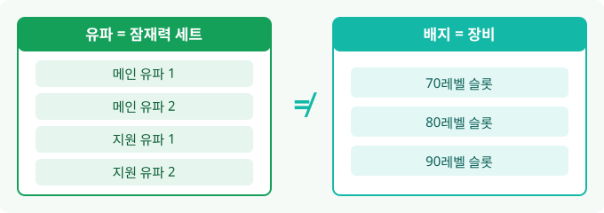
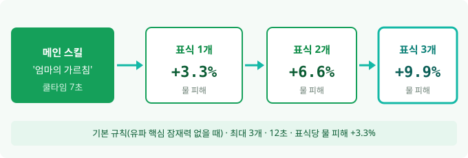

스텔라소라 엘리 공략, 청소 표식 운영과 유파 선택, 배지·레코드 세팅
※ 다른 공략은 댓글을 참고해 주세요.
엘리를 데려오면 제일 먼저 막히는 지점이 유파랑 배지일 텐데요, 처음 엘리를 키우는 분 기준으로 이 두 단어부터 갈라 놓고 시작할게요. 이름만 보면 둘 다 진영이나 소속 같죠?
이 글의 '유파'는 잠재력 세트(메인 유파 1·2 + 지원 유파 1·2)이고, '배지'는 잠재력과 별개로 끼우는 장비예요. 소속 진영과는 아무 상관이 없고요. 엘리는 2026년 10월 6일 기준으로 한국 서비스에서 픽업 중인데요, 확인이 안 된 필살기 수치·파티 명단·배지 옵션은 이 글에서 뺐습니다.

유파(잠재력 세트)와 배지(장비)는 별개 시스템이에요
1. 엘리 한 줄 정리와 픽업 일정
그래서 엘리가 어떤 여행가냐면, 5성 한정 물 속성 근접 여행가예요. 한국 서비스 픽업은 10월 20일 오전에 끝날 예정입니다.
| 구분 | 내용 |
|---|---|
| 등급·속성 | 5성 한정 · 물(Aqua) |
| 전투 방식 | 근접 |
| 여행가 스타일 | 착실함(Steady) |
| 포지션 표기 | 한국판 딜러 |
| 픽업 종료 | 10월 20일(화) 오전 종료 예정 |
| 같이 픽업되는 4성 | 시먀오(물) · 징린(빛) |
종료 시각은 한국 서비스 정리 영상 요약 페이지 기준(10월 20일 오전 10:59)이에요. 글로벌 일정은 UTC-7 기준 10월 19일 19:59 종료인데, 한국 시각으로 바꾸면 1시간쯤 차이가 날 수 있으니 뽑기 전에 배너 하단의 남은 시간 표시로 한 번 더 맞춰 보세요.
2. 스킬 구조
엘리의 스킬은 일반·메인·지원·필살 네 갈래인데요, 운영의 중심은 메인 스킬 '엄마의 가르침'이에요(나무위키 엘리 문서 기준, 10월 6일 확인).
| 구분 | 스킬명 | 핵심 내용(스킬 레벨 13 기준) |
|---|---|---|
| 일반 | '청소 시작' | 5단 연속 공격 |
| 메인 | '엄마의 가르침' | 쿨타임 7초, 841%×3 + 736%×3 타격, 피해를 줄 때 '청소 표식' 1개 획득 |
| 지원 | '전문가의 마무리 작업' | 쿨타임 12초, 순환 타격 298%×4 뒤 마무리 536%·655% |
| 필살 | '대청소' | 1단계 '대청소·먼지 제거'(청소 태세 진입) 후 2단계 '대청소·정리정돈' |
스킬 탭을 열면 네 가지 스킬이 한 화면에 나옵니다
스킬 이름만 훑어도 '청소 시작'에서 '대청소'까지 컨셉이 한결같아서 주인장은 읽다가 웃음이 나더라고요ㅋㅋ 메인 스킬 한 번이 6타(3타씩 두 묶음)라 표식을 얹는 타이밍이 곧 딜 타이밍이 되네요.
참고로 메인 여행가는 지원 스킬을 쓰지 않고, 지원 여행가는 일반 공격과 메인 스킬을 쓰지 않아요. 필살기 '대청소'의 피해 배율은 레벨마다 값이 달라서 이 글에서는 수치를 적지 않았어요.
확인 위치: 인게임 스킬 상세 화면 · 공식 공지
3. 청소 표식 운영
표식은 어떻게 쌓이고 얼마나 오를까요? 기본 규칙부터 볼게요. 메인 스킬 '엄마의 가르침'으로 피해를 줄 때마다 청소 표식이 1개씩 쌓여 최대 3개, 12초 동안 유지되고, 표식 하나당 엘리 자신의 물 속성 피해가 3.3%씩 올라서 3개면 9.9%입니다(나무위키 엘리 문서 기준, 10월 6일 확인).

기본 규칙은 메인 스킬 한 번에 표식 한 개, 세 개가 차면 물 피해 9.9% 증가
다만 이건 유파 핵심 잠재력이 없을 때의 기본이고요, 뒤에서 볼 메인 유파 1의 '빠른 청소'를 고르면 이 규칙이 바뀝니다(팀 전원이 물 속성일 때). 엘리가 메인일 때 손에 쥐는 건 메인 스킬·일반 공격·필살기 셋이에요.
표식을 건너뛰는 길도 있어요. 공용 잠재력 '빗자루 휩쓸기'는 120초에 한 번 쓸 수 있는데, 회피를 길게 눌러 빠른 발놀림에 들어가면 청소 표식 3개를 곧바로 얻는 효과인데요, 여기에 팀의 물 속성 여행가 수에 비례해서 엘리의 물 피해까지 오릅니다.
기본 규칙에서는 메인 스킬 쿨타임이 7초, 표식 유지가 12초라 3개가 계속 유지되는지는 갱신 방식 자료가 없어서 단정하지 않을게요.
4. 유파 선택, 메인 유파 1·2와 지원 유파 1·2
그럼 유파는 뭘 고를까요? 메인 유파 2개와 지원 유파 2개, 총 네 갈래 중에서 엘리를 어느 자리에 세우느냐에 맞춰 고르면 돼요.
| 구분 | 메인 유파 1 | 메인 유파 2 |
|---|---|---|
| 방향 | 청소 표식을 계속 쌓아 필살기 2단계를 쓰는 쪽 | 표식을 가득 채워 필살기 1단계를 쓰고, 일반 공격·표식 형태를 같이 강화하는 쪽 |
| 핵심 잠재력 | '빠른 청소' · '다중 청소' | '먼지 제거 소용돌이' · '청소의 연속' |
| 희귀 잠재력 | 유파 전용 1종 | '추가 작업' |
| 일반 잠재력 | 유파 전용 2종 | 유파 전용 2종 |
| 공용 잠재력 | '빗자루 휩쓸기'(희귀), '검은 고양이의 발걸음' 등 일반 잠재력 | 메인 유파 1과 같음 |
메인 유파 1의 핵심 '빠른 청소'는 팀 전원이 물 속성이면 표식이 최대 5개까지 쌓이고, 시간이 지나도 사라지지 않고, 표식 하나당 치명타율이 3%씩 오르는 효과예요. 표식이 가득 차면 메인 스킬로 필살기 2단계를 쓰는 게 이 유파의 흐름이죠(나무위키·영문 위키 기준, 10월 6일 확인).
엘리를 지원으로 세울 때는 지원 유파 1(핵심 '서리의 칼날'·'반복 청소')과 지원 유파 2(핵심 '마당쓸기 초식'·'추가 파괴') 중에서 골라요. 핵심 잠재력은 최대 2개까지고 레벨업이 안 되니, 위 표에서 핵심 2개가 어느 유파인지부터 보고 고르세요.
| 내 상황 | 먼저 볼 유파 |
|---|---|
| 표식을 계속 쌓아 필살기 2단계로 가고 싶다 | 메인 유파 1(핵심 '빠른 청소') |
| 표식을 가득 채워 필살기 1단계를 쓰고 싶다 | 메인 유파 2(핵심 '먼지 제거 소용돌이') |
| 엘리를 지원 슬롯에 두고 싶다 | 지원 유파 1(핵심 '서리의 칼날'·'반복 청소') 또는 지원 유파 2(핵심 '마당쓸기 초식'·'추가 파괴') |
유파마다 핵심 잠재력이 갈리니 이 화면에서 먼저 확인하세요
파티는 근거 있는 방향 하나만 확실해요. '빗자루 휩쓸기'가 팀 물 속성 여행가 수에 비례하고 '빠른 청소'도 팀 전원 물 속성을 바라니, 물 속성으로 통일하는 쪽이 엘리를 가장 잘 살립니다.
확인 위치: 인게임 팀 편성 화면 · 공식 공지
5. 배지·레코드·승급
배지는 여행가 레벨 70·80·90 달성 때 하나씩 열리는 장비 슬롯 세 개이고, 잠재력과는 별개로 돌아가요. 연성으로 만들고 재련으로 속성을 바꾸는데, 80레벨 배지에는 스킬 레벨 증가 옵션이, 90레벨 배지에는 잠재력 레벨 증가 옵션이 붙을 수 있어서 둘이 올려 주는 대상이 달라요.
확인 위치: 인게임 배지 재련 화면 · 공식 공지
배지 슬롯은 레벨에 따라 70, 80, 90에서 하나씩 열립니다
레코드는 멜로디 스킬과 협주 스킬을 주는 슬롯인데요, 5성 한정 물 속성 레코드 'Bedtime Story'가 눈에 띄네요(한국판 명칭은 확인이 안 돼 영문으로 적어요). 엘리 전용이 아니라 물 속성 메인 여행가라면 쓸 수 있어요. 멜로디 스킬은 메인 물 속성 여행가가 스킬·필살기를 쓰면 'Storybook'이 최대 3중첩까지 쌓이는 효과고, 협주 스킬 'New Start Book'·'Innocent Reverie'는 팀 물 속성 피해를 올려 줘서 3번에서 말한 물 속성 통일 방향과 맞물려요. 레코드 모집은 5성 2%, 픽업 75%, 천장 120회입니다.
승급은 여행가 레벨 10단위 구간에 따라 모자류 재료(종류가 점점 늘어나요)와 도라(레벨 10~80 구간)가 들고 레벨 90까지 이어져요. 같은 여행가를 또 모집하면 심상 결정을 얻는데, 이걸로 특성을 열어 최대 5돌까지 갈 수 있고요. 레코드에도 최대 5회 돌파가 있어서 '돌파'라는 말이 두 군데에서 쓰이니 헷갈리지 마세요.
승급은 10레벨 단위로 재료와 도라가 필요합니다
6. 뽑을지 판단과 체크리스트
그래서 뽑아도 될까요? 엘리는 한정이라 상설 모집에 들어가지 않으니, 필요하면 픽업이 끝나기 전에 정해야 해요.
여행가 모집은 5성 2%, 픽업 50%, 하드 천장 160회, 120 마일리지로 나와 있어요(나무위키 모집 문서 기준, 10월 6일 확인). 글로벌 안내(kaiden 1.16 안내)에서는 한정 배너의 최초 120회 모집 때 엘리 1장이 추가되고 배너가 끝나면 초기화된다고 하는데, 한국 서비스에 그대로 적용되는지는 모집 화면에서 확인해 보세요. 나무위키도 120은 배너마다 한 번뿐이라 배너가 바뀌면 사라지고, 160 천장 스택은 다음 픽업으로 이어진다고 설명해요.
| 내 보유 상황 | 판단 포인트 |
|---|---|
| 물 속성 여행가가 팀에 이미 있다 | '빗자루 휩쓸기'와 협주 스킬이 물 속성 편성 수에 기대는 효과라 맞아떨어져요 |
| 물 속성이 거의 없다 | 엘리 한 명 때문에 물 속성 편성을 새로 짜야 하는지부터 따져 보세요 |
| 모집 재화가 120회분에 못 미친다 | 글로벌 안내(kaiden)와 나무위키가 같은 방식으로 설명하지만 정확한 적용은 모집 화면에서 확인하고, 불확실하면 천장 160회 기준으로 계산하세요 |
- ☐ 팀의 물 속성 여행가 수 확인
- ☐ 메인 유파 1·2와 지원 유파 1·2 중 하나 고르기(핵심 잠재력은 최대 2개)
- ☐ 레코드 'Bedtime Story' 보유 여부와 80·90레벨 배지 슬롯 확인
- ☐ 픽업 종료 시각과 120회 보너스 적용 여부 다시 확인
참고한 곳
· 스텔라 소라 App Store 한국 페이지(YOSTAR)
2026.10.06 기준